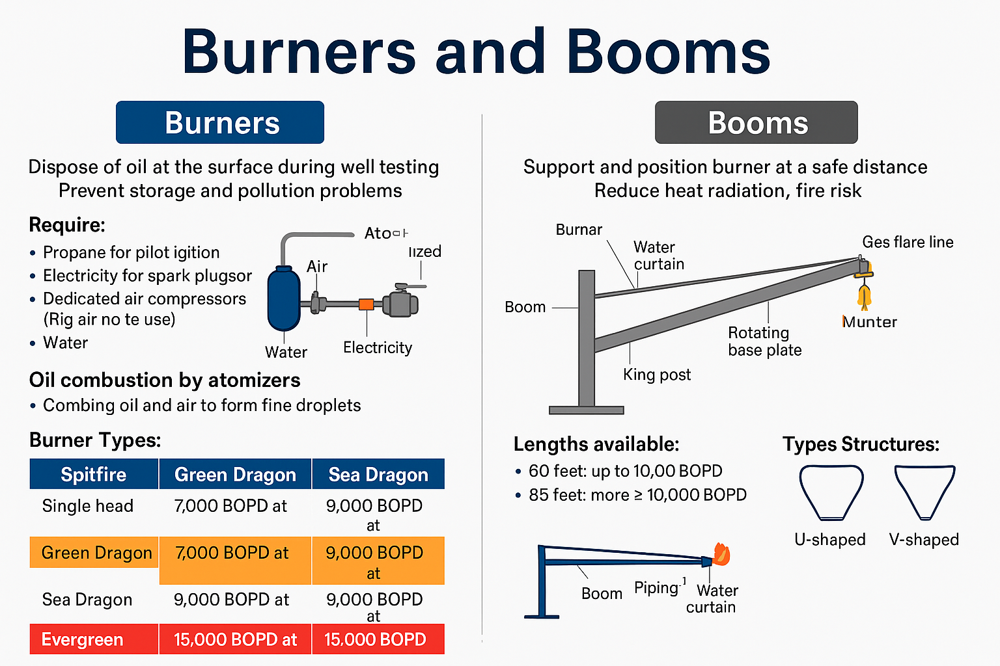

🔥 Burners – Questions & Answers:
-
Q1: What is the main purpose of using burners during well testing?
Answer:
✅ A: Burners are used to dispose of oil at the surface during well testing, preventing storage and environmental pollution..
-
Q2: Why are burners mounted on long booms?
Answer:
✅ A: To reduce heat radiation and keep the burner at a safe distance from the rig..
-
Q3: What systems do burners require to function?
Answer:
✅
- Propane for pilot ignition
- Electricity for spark plugs or lodge boxes
- Dedicated air compressors (not rig air)
- Water to prevent excessive heat radiation
-
Q4: How is oil combustion achieved in burners?
Answer:
✅ A: Through atomizers that mix air and oil into fine droplets before being ignited by the pilot flame..
-
Q5: What are the common safety features in burner systems?
Answer:
✅
- Check valves on air and oil lines
- Swivel joints for positioning
- Water rings for efficient combustion
- Spark-ignited propane pilot lights
🚀 Booms – Questions & Answers
-
Q6: What is the role of the boom in burner systems?
Answer:
✅A: To support and position the burner at a safe distance from the rig, reduce fire risk, and carry supply lines (air, water, oil, propane)..
-
Q7: What lengths are available for booms, and when are they used?
Answer:
✅
- 60 feet: Up to 10,000 BOPD
- 85 feet: More than 10,000 BOPD (used with high heat burners like Evergreen)
-
Q8: What are the two main types of boom structures?
Answer:
✅
- U-shaped: With one gas flare line
- V-shaped (heavy-duty): With two gas flare lines
-
Q9: What components are needed to rig up a boom?
Answer:
✅
- King post
- Base plate
- Horizontal and vertical guy lines
- Swivel for boom movement
- Crane for lifting
- Safety pins and tag lines
-
Q10: What are the key safety measures during burner and boom operations?
Answer:
✅
- Work permits must be in place
- Use of life vests (not necessarily safety harnesses)
- Limit of two personnel on boom
- Preferably done in daylight with standby boat and radio communication
- Check weather conditions before operation
-
Q11: What is the maximum number of people allowed on the boom during operations?
Answer:
✅ A: Only two personnel are allowed on the boom at any time for safety reasons..
-
Q12: What is the purpose of using a water curtain on the boom?
Answer:
✅ A: To control heat radiation and enhance combustion efficiency.
-
Q13: What is the purpose of the check valves in the burner system?
Answer:
✅ A: To prevent backflow of air into the oil line and vice versa, ensuring safe operation.
-
Q14: What is the function of the pilot light in the burner system?
Answer:
✅ A: To ignite the oil and air mixture for combustion.
-
